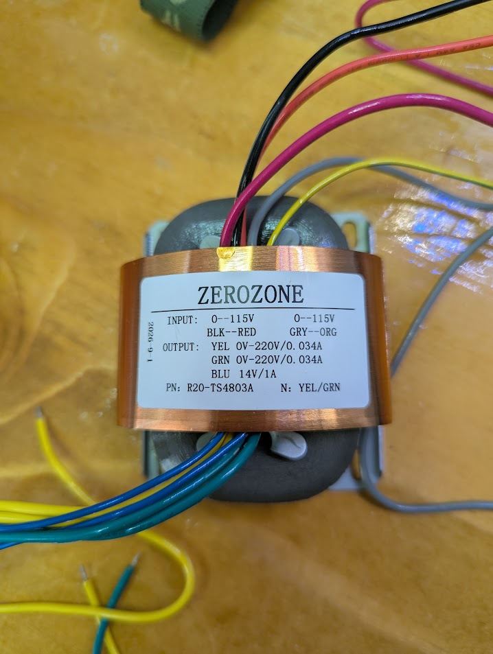

Zero Zone R-core transformer — R20-TS4803A
Kit transformer for GG-PSU (+ GG-PRE load). Label photo C (user, 2026-11-09).

| Brand | ZEROZONE |
| P/N | R20-TS4803A |
| Label note | N: YEL/GRN |
| Date on label | 2026-9-1 (as printed) |
Windings (from label)
| Winding | Wires | Rating |
|---|---|---|
| Primary A | BLK — RED | 0–115 V |
| Primary B | GRY — ORG | 0–115 V |
| Secondary HV A | YEL | 0–220 V, 0.034 A |
| Secondary HV B | GRN | 0–220 V, 0.034 A |
| Secondary LV | BLU | 14 V, 1 A |
C = label text. GG-PSU HV-IN pin order U — buzz or match seller diagram before first power.
Mains input wiring
Dual 115 V primaries — series for ~230 V EU mains (e.g. Netherlands 230 V / 50 Hz C), parallel for ~115 V US mains. Frequency 50 Hz vs 60 Hz does not change primary strapping on this R-core; use 250 VAC-rated fuse and inlet.
230 V (EU / NL) C (user + standard R-core practice)
Two 115 V halves in series (~230 V):
Mains L ────── BLK
├── winding A (115 V)
RED ─┬─ GRY
├── winding B (115 V)
Mains N ────── ORG
Junction: tie RED to GRY (you remembered this correctly).
- Do not use the transformer until RED–GRY is the only series junction (no BLK/ORG crossed).
- Use a fuse in L only: 200 mA, time-delay (T), ≥ 250 VAC, 5×20 mm for 230 V series primary I (see BUILD.md §1.0). Fast (F) types often nuisance-trip on R-core inrush.
115 V (US)
Parallel both halves for 115 V:
| Tie together | Role |
|---|---|
| BLK + GRY | One mains side |
| RED + ORG | Other mains side |
Outputs → GG-PSU I
| Transformer | GG-PSU destination I |
|---|---|
| YEL + GRN (each 220 VAC winding) | HV-IN / bridge BR1 and BR2 AC inputs (one winding per HV channel) |
| BLU (14 VAC, 1 A) | Filament AC in → BR3 → LT1085 → +12 to GG-PRE |
Label N: YEL/GRN: treat as manufacturer note that the two HV secondaries are the paired 220 V outputs (not chassis neutral). Common reference is established on GG-PSU when strapping ±200 V for the preamp — do not assume YEL/GRN centre-tap without a buzz test U.
Filament: 14 V AC on BLU fits seller guidance (~14–15 VAC in for 12.6 V DC out). Adjust with VR1 (W202) on the PSU.
Quick system chain
230 V mains ──► R20-TS4803A ──► GG-PSU ──► GG-PRE AMP
(RED–GRY tie) ±200 V audio I/O
+12 V heaters
Chassis earth (user build C)
Some R-core units bring out geel-groen for core / shield bond. Tie trafo geel-groen and IEC PE to the same chassis safety-earth point (not through the DPST). Audio star ground is wired separately later — see BUILD.md §1.0 as-built inlet.
Safety
- Mains-voltage wiring on the primary — strain relief, fuse, correct series/parallel.
- 220 VAC secondaries are high voltage — insulated terminations before bench tests.
- Bleed GG-PSU capacitors before probing. ±200 V at preamp is lethal.